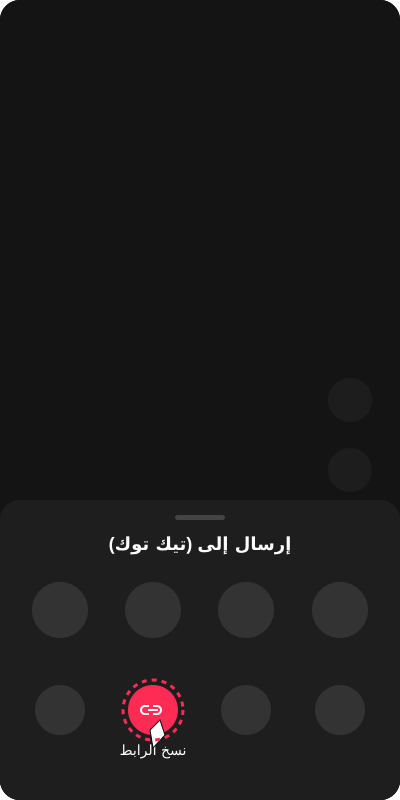

تيك توك من أكثر المنصات شعبية في العالم، وملايين المستخدمين يرغبون في حفظ الفيديوهات المفضلة لديهم على أجهزتهم. المشكلة الرئيسية هي أن تيك توك يضيف علامة مائية متحركة على جميع الفيديوهات عند تحميلها. في هذا الدليل الشامل، سنشرح لك خطوة بخطوة كيفية تحميل أي فيديو من تيك توك بدون علامة مائية وبجودة عالية HD باستخدام تطبيق HubSave المجاني.
الخطوات بالتفصيل
افتح تطبيق تيك توك
افتح تطبيق تيك توك على هاتفك وتصفح حتى تجد الفيديو الذي ترغب في حفظه. تأكد أن الفيديو خاص بك أو حصلت على إذن من صاحب المحتوى.
انسخ رابط الفيديو
اضغط على زر "مشاركة" (أيقونة السهم) أسفل الفيديو. من القائمة التي ستظهر، اختر "نسخ الرابط" (Copy Link). سيتم حفظ الرابط في حافظة هاتفك تلقائياً.

افتح تطبيق HubSave
اخرج من تيك توك وافتح تطبيق HubSave. التطبيق سيتعرف تلقائياً على الرابط المنسوخ ويلصقه في مربع البحث. إذا لم يحدث ذلك، اضغط على المربع واختر "لصق" يدوياً.

اضغط "فحص الرابط"
اضغط على زر "فحص الرابط" وانتظر ثوانٍ قليلة حتى يتم تحليل الفيديو.
اختر نوع التحميل
ستظهر لك خيارات:
• تحميل الفيديو — لتحميل الفيديو كاملاً بجودة HD بدون علامة مائية
• تحميل الصوت (MP3) — لحفظ الصوت فقط كملف MP3

الفيديو في السجل
بعد اكتمال التحميل، يمكنك الذهاب إلى تبويب "السجل" لمشاهدة جميع الفيديوهات المحملة، أو إضافتها للمفضلة، أو مشاركتها.
لماذا تختار HubSave؟
- مجاني بالكامل — لا رسوم اشتراك ولا مشتريات داخلية
- بدون علامة مائية — فيديو نظيف 100%
- سرعة عالية — التحميل يتم في ثوانٍ معدودة
- يدعم العربية والإنجليزية — واجهة سهلة الاستخدام
- مكتبة ذكية — سجل التحميلات والمفضلة
⚠️ إخلاء المسؤولية — الاستخدام الشخصي فقط
تطبيق HubSave مصمم حصرياً لتحميل الفيديوهات الخاصة بك فقط أو الفيديوهات التي حصلت على إذن صريح من صاحب المحتوى لتحميلها.
نحن لا نشجع أو ندعم أو نوافق على انتهاك حقوق الطبع والنشر بأي شكل من الأشكال. أنت تتحمل المسؤولية القانونية الكاملة عن أي محتوى تقوم بتحميله.
يجب عليك دائماً الحصول على إذن صريح من صاحب المحتوى الأصلي قبل حفظ أو مشاركة أي فيديو. المطور غير مسؤول عن أي استخدام خاطئ للتطبيق.